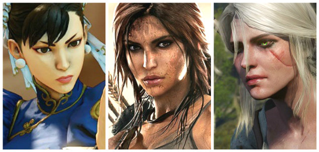

Conheça um pouco mais sobre a cultura gamer
Assim como outras culturas de música, leitura, filmes e séries, nos games é possível identificar essa cultura presente de diversas formas. Hoje as formas de expressar os games são das mais diversas como uma camisa, livro, acessórios para casa e por que não um cartão de crédito customizado, uma bebida com a embalagem do jogo preferido e assim por diante.
Tudo isso acontece pois o consumidor de jogos digitais é cada vez maior, seja no Brasil e no mundo, e esse hábito de entretenimento está presente de uma maneira cada vez mais imersiva. Tivemos muitas modas lançadas ao longo do anos e hoje podemos dizer que a cultura gamer, ser gamer e viver isso de maneira mais intensa é algo que muitos gostam de expressar. Ser gamer, pelos estudos da Pesquisa Game Brasil, significa para muitos uma forma de se conectar com algo que gera identidade para essas pessoas e assim trazer aquilo para o seu estilo de vida e com isso, vemos cada vez mais o mundo dos games ganhando espaço em outros setores e negócios.
Representatividade e Diversidade
Vimos nos últimos anos a indústria de games apresentar uma série de personagens mulheres e que são protagonistas em seus jogos ou sagas, algo que era pouco apresentado no inicio da indústria de games. Com isso, temos também espaço para personagens de diversas culturas, etnias e gêneros, criando um universo onde todo mundo possa se identificar e assim ambientes e jogos cada vez mais inclusivos. Esse é um passo importante e que deve continuar acontecendo com mais frequência no mundo dos games e eSports, mas que precisa de apoio e atenção para que seja cada vez mais realidade. 